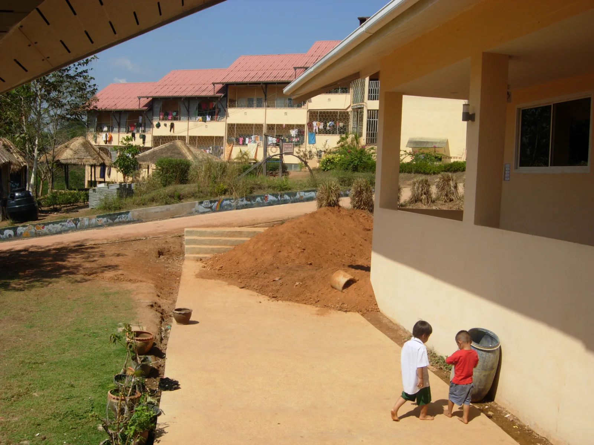
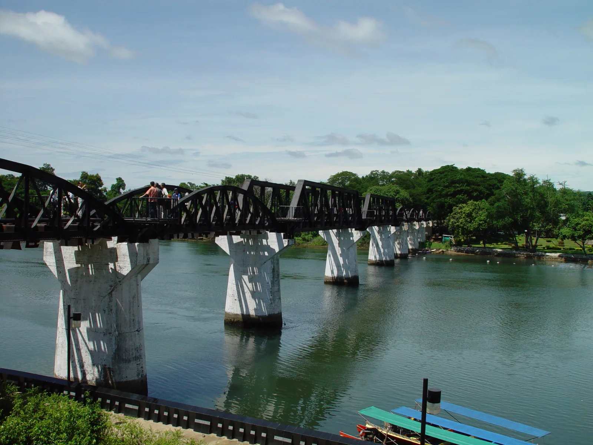
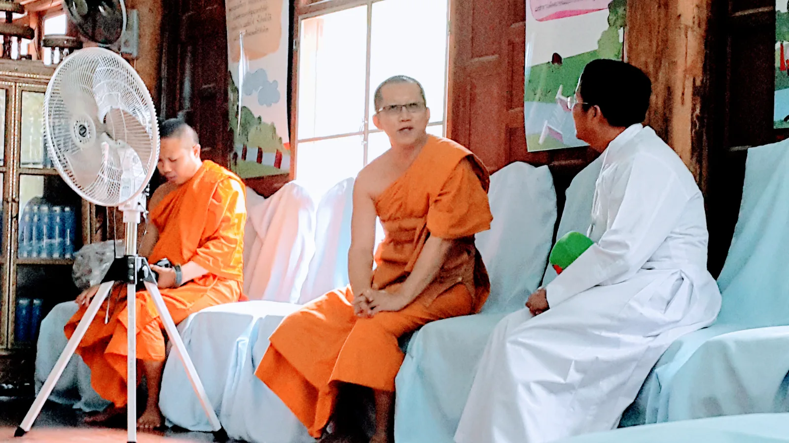

เกี่ยวกับจุดหมายนี้
กาญจนบุรี เป็นจุดหมายด้านธรรมชาติในจังหวัดกาญจนบุรี เหมาะสำหรับใช้วางแผนการเดินทางและตรวจสอบข้อมูลสถานที่จากแหล่งอ้างอิง
สถานะข้อมูลสถานที่
ข้อมูลสถานที่เฉพาะ เวลาเปิด–ปิด และค่าเข้าชมกำลังรอตรวจสอบจากแหล่งทางการ จึงยังไม่แสดงข้อมูลคาดเดา
รูปภาพที่เชื่อมกับสถานที่
Bridge over River Kwai 
This is the AMURTEL Children's and Mother's Home <i>Baan Unrak</i> ("House of Joy") in Sangkhlaburi (North-West of Kanchanaburi Province of Thayland, close to Myanmar). 
<div class="description">
500px provided description: Untitled [#thailand ,#bangkok ,#floating market ,#damnoen saduak]</div> 
A Thai Buddhist monk talking to a Catholic priest in a temple in Kanchanaburi